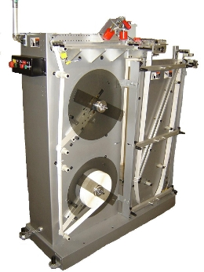

|
|
KR203P Pick and Place Machine
Kirk-Rudy's 203P system attaches a wide variety of cards and pre-packaged samples onto various mailers and inserts using quick-setting hot melt glue
An affordable alternative to high priced attaching systems, the KR 203P System is ideally suited for small to mid volume operations requiring quick set-up, ease of use and reliability. Hot melt glue
is automatically applied to the media as it leaves the KR shuttle feeder. Cards or sample packs are accurately placed onto the media by the KR Pick and Place head. Where appropriate, peel-away
adhesives permit product removal and easy clean-up. Use the optional dual hopper kit for placing two cards side by side or the plow fold station for in-line folding.
Click for video>
|
|
|
KR203 Tip On Machine
Use the KR 203 Tip On head to apply post cards, envelopes or other similar type items to your mail piece
The KR 203 mounts onto most KR 215 and KR 219 label bases and even works with some Cheshire bases. It can handle media from 2" x 2" up to 7" wide by 8" long at speeds up to 12,000
per hour. Items are shuttle fed onto a vacuum wheel and carried against a glue wheel prior to application. A miss feed detection circuit disengages the shuttle when a media miss feed occurs preventing
it from feeding a card
|
|
|
KR415 Interface Conveyor
Use the KR 415 to save time and money by running your folder inline with your tabber or inkjet addressing system
Be more productive by running your KR inkjet system or tabber inline with your folder using the KR 415 Interface Conveyor. The KR 415 bridges the gap and height difference between the folder outfeed
and the KR system eliminating a secondary feed operation.
The pivoting infeed provides infinite adjustment between 19.5" and 33"off the deck. An integrated bump turn orients product for inkjet addressing or tabbing. Top belts on the outfeed ensure
product is controlled as it exits the KR 415.
Use the KR 415 with most brands of folding, inkjet and tabbing systems. It's fast, durable and reliable...just what you've come to expect from Kirk-Rudy.
Click for video>
|
|
|
KR219 Inkjet Base
The KR 219D provides a way to inkjet print and dry both sides of a piece without having to flip the piece over
Dryers and print heads locate between individual vacuum belts that adjust across the base. Offset top and bottom dryers prevent overheating. Steel frame construction permits easy access in and
around the base while the tilt-back frame simplifies belt replacement. Use the KR 219D in-line with most brands of inkjet bases, folders and inserters. Click here to see different view
|
|
|
KR324 Stand Alone Feeder
The stand alone KR 324 shuttle feeder handles a wide variety of media from single sheets and envelopes to books and magazines. Smaller than the KR 224 shuttle feeder, the KR 324 accommodates product
3" wide by 5" long up to 14" wide by 14" long.
Like all shuttle feeders, the KR 324 runs continuous because its hopper is loaded from the top and feeds from the bottom. Equipped with a DC variable speed motor, vacuum pump and roller cabinet,
the KR 324 works with most inline addressing systems.
|
|
|
KR345 Edge Stacking Conveyor
Sort and tray mail more efficiently with the KR 345 Edge Stacking Conveyor
An all new concept in mail handling, the KR 345 handles most of the work at the end of an inkjet addressing or inserting system. Automatic sorting and increased storage capacity means one operator
can easily manage high speed production runs.
Designed to produce a consistent shingle under all conditions, the KR 345 converts the flat, shingled stream of mail into an upright position. Sorting occurs during the shingle process so the tray breaks
are clearly evident on the edge stacking section. Trays are quickly and easily filled by sliding entire bundles off the side of the conveyor and into a mail tray.
Features
- Automatic sorting combined with edge stacking makes mail tray filling quicker and easier
- Produces a consistent shingle under all conditions
- Clearly evident tray breaks
- Use the KR 345 with most standard inkjet addressing and inserting systems
|
|
|
KR445 Turn Over
Use the KR 445 in-line with an inkjet printing system or inserter to flip over and address, tip or label the backside of a catalogue, envelope or other paper product. Accommodates product up to 1/2"
thick. In feed and out feed tables ensure a smooth transition between machines. One-sided frame design makes belt changes quick and easy.
Features
- In-line addressing/tipping improves productivity
- Easily rolls into position
- Optional hydraulic lift kit reduces setup time
|
|
|
KR486 LR Card Attaching Machine
Kirk-Rudy's 486 system attaches cards and other flat products onto various mailers and inserts using quick-setting hot melt adhesive
The KR 486 LR achieves high speed, accurate card placement using pusher lugs on both the transport base and the Attaching Head. Mechanical timing between the base and head ensures registration. Quick-setting
hot melt adhesive securely holds the item in place. Where appropriate, peel-away adhesives permit product removal and easy clean-up. Use the optional KR219 RSF station for in-line folding. The
KR 486 is ideally suited for mailing/packaging operations requiring reliability, quick set-up and high throughput
|
|
|
KR533 Autoloader
If you are looking for cost effective, flexible solutions to improve productivity, look no further than the KR 533
Improve feeder consistency and productivity with the new KR 533 Autoloader. The KR 533 handles a wide variety of product and is versatile enough to work with almost any feed system.
The KR 533 manages nearly 6’ of material and delivers it into the hopper as needed. The hopper level is maintained within a narrow range keeping the feed consistent. The KR 533’s
jogger assembly keeps product straight in the hopper.
The only autoloader designed to work with friction and shuttle feeders, the KR 533 keeps you flexible. Slotted brackets allow the top to be quickly angled for friction feeders or placed horizontal
for shuttle feeders. You can also use the KR 533 inline or 90 degrees to product flow.
Features
- Designed to work with friction and shuttle feeders
- Slotted brackets allow the top to be quickly angled for friction feeders or placed horizontal for shuttle feeders
- Use in-line or 90 degrees to product flow
|
|
|
KR535 Tabmaster
Take advantage of postal automation discounts through mail piece tabbing
The KR 535 makes tabbing of paper products faster and easier than ever. A straight-forward operator interface simplifies operator training and setup while industry standard motors and controls makes the KR 535 simple to operate and economical to maintain. All major types of tabs as well as pressure sensitive stamps and labels of various shapes and sizes can be placed on a wide variety of products. Right or left edge tabbing, bump turn attachments, wide and fan-folded label kits along with a folder interface conveyor option makes the KR 535 a truly flexible system that can grow with your business.
Click for video>
|
|
|
KR600 Newspaper Inserter
Use the KR 600 to insert 4 page advertisements up to full size newspapers and tabloids
The KR 600 newspaper inserter is designed for small to mid-volume operations where ease of use, flexibility and reliability are needed. The KR 600 is expandable to 16 inserts and is available with
interchangeable rotary or shuttle feeders making it capable of handling most types of inserts.
CPLC control simplifies operator training and setup while also providing productivity enhancing features. Accuracy is ensured using miss feed detection and downstream feeder inhibit while an optional
inline divert gate removes non-conforming product.
Optional "on the fly" feeder timing further improves productivity by reducing setup time.
click here for video.>
|
|
|
KR630 Stacking System
Increase your productivity using the KR 630 to automatically sort mail in-line with your addressing system.
Sorting mail electronically is more accurate than manual sorting and allows for higher processing speeds. Stacks are output according to preset counts and zip code breaks established in the
mailing list. An in-line divert gate ensures accuracy by removing purged mail pieces. Setup is a snap using the on board PLC and operator interface.
Priced and built right, the KR 630 stacks the odds of success in your favor. See the KR 950 for Kirk-Rudy's compensating stacker.
|
|
|
KR950 Compensating Stacker
Stack a wide range of product efficiently and conveniently with the KR 950 Compensating Stacker
The KR 950 adjusts quickly and easily to accommodate a wide range of material from small books up to full size newspapers. Stack integrity is maintained using joggers and a receding lift table to
minimize the stack-drop distance.
The unique design of the KR 950 allows you to configure it to match your space requirements. Stacks exit right, left or straight thru based on the position of the exit conveyor with no sacrifice in throughput.
Changeover between exit positions is quick and easy.
The KR 950 is a combination of the latest technology and new, innovative features that allow you to use it throughout your facility on binders, inserters and mail bases.
Click here for video>
|
|
|
KR NetJet System
The NetJet inkjet addressing system combines HP thermal inkjet technology with an intuitive Windows-based user interface to make printing variable text and graphics simple and fast.
High-quality inkjet printing
- HP thermal inkjet technology
- Up to 600 dpi resolution with 1.5-inch print swath
- Multiple fonts within text boxes
- Text, graphics and barcode rotation
Flexibility
- Combine with Kirk-Rudy feeders and transports for custom system
- Add optional single-cartridge remote for 2-inch print swath or second color
- Optional automatic cartridge capping
Click for video>
|
|
|
KR WaveJet System
Inkjet addressing system for most coated stocks — including aqueous
Deliver high-impact direct mail and advertising on glossy papers with the Kirk-Rudy WaveJet. The easy-to-use WaveJet lets you print great-looking addresses and graphics on a wide variety of papers, including
most nonporous, coated stocks.
Versatility
- Prints on a wide range of papers, including nonporous, coated stocks
- Solvent and UV inks available
- Suited for all production environments
- Interfaces with Kirk-Rudy handling systems for maximum flexibility
High Speed, high quality printing
- Print speeds up to 600 feet per minute
- High-resolution inkjet printing up to 660 dpi
- Multiple fonts within text boxes
- Text, graphics and barcode rotation
Click for video>
|
|
|
KR837A Divert Module
Use the KR 837A divert system whenever individual pieces need to be removed from a continuous flow of product on a KR inkjet base. Control it with an inkjet, KR 895 pattern vision system, camera or barcode
reader. Mounts onto any KR 215 or 219 style transport and can be added in the field. An electric solenoid or compressed air cylinder operates the divert mechanism. Product is diverted into a catch
tray that mounts onto the end of the cabinet. The picture shows the divert assembly mounted onto the end of a KR 215 IJ base. Product flow is left to right. The belts on the divert assembly are driven
by the out feed roller on the KR 215 or KR 219 transport. The divert system works best with thin, flexible product. Inflexible material may not divert properly.
|
|
|
KR412 Shuttle By-Pass
Want to personalize Post-It Notes using your KR tabber and addressing system?
Tabber belts smearing your addresses?
Want to increase productivity by running jobs inline?
Convert your KR 215 IJ transport into an inline base using the KR 412 Shuttle By-Pass.
The KR 412 installs in minutes over top the KR 215 shuttle similar to the way a friction feeder is installed. The KR 412 carries product up and over the shuttle and delivers it into the feed rollers
and vacuum transport of the KR 215.
Features
- Easily installs in minutes over the KR 215 shuttle feeder
- Position your KR addressing system after your tabber or labeling system
- Run your addressing system inline with a folder, another inkjet system or most other inline systems
|
|
|
KR WideJet System
Fast, flexible, wide-format printing that makes business sense
Now you can afford fast, high-quality, wide-format printing of variable graphics and data, addresses and barcodes. HP thermal inkjet technology and modular Kirk-Rudy design combine in the WideJet to
give you optimum performance, flexibility and value.
High-quality printing at low cost
- HP thermal inkjet technology
- Up to 1200 dpi resolution
- 4.25-inch print swath, expandable to 17 inches
Increased productivity
- Print speeds up to 600 feet per minute
- Bulk-ink supply and automatic printhead capping and wiping for minimal
operator intervention
Ease of use
- Graphical user interface for easy job setup and data management
- Minimal operator training required
Expanded capabilities
- Print on variety of porous and nonporous materials with HP black pigmented inks
- Combine with the Kirk-Rudy NetJet for spot color and additional print area
Click for video>
|
|
|
KR 500 Friction Feeder
The KR500 is a heavy duty Friction Feeder that is designed to feed flat die-cut boxes and many other difficult irregular products up to widths of 19.25” and speeds of 1000 fpm.
Features
- Moveable friction belts
- Vibrating rear product guides
- Side guides extend below friction belts
Options
- Speed-Following DC drive
- Servo Motor Drive
- Hydra-Lift Kit
Click here for video>
|
|
|
KR 730 Roller Registration Conveyor
Register a wide range of product efficiently and conveniently with the KR 730 Roller Registration Conveyor
The KR 730 adjusts quickly and easily to accommodate a wide range of material from small 3” x 3” single sheet up to 14” x 14” books. The unique non-angled infeed and outfeed
rollers maintain registration integrity.
The unique design of the KR 730 allows you to configure it to match your space requirements. Product can exit right, left or straight through. Changeover between exit positions is quick and easy.
The versatility of the KR 730 separates it from the competition. Invest in the KR 730 and find out how a little versatility can make a big difference in your productivity.
Click for video>
|
|
|
KR 435 Mini Tabber
The KR 435 is Kirk-Rudy's newest and most affordable tabbing system yet. Priced thousands less than comparable systems, the KR 435 tabber utilizes many of the same features that made the KR 535
tabber a best seller
Key features like side register belts, side to side top plate adjustment and automatic tab sensor setup keep the tabbing process consistent and reliable. Also, the KR 435's operator interface
utilizes all the same user-friendly programs found on the KR 535 that simplify operator training and setup.
The KR 435 handles large 16" diameter rolls and runs all major types of tabs as well as pressure sensitive stamps and labels of various shapes and sizes. Multiple tabs or labels can be applied
in a single pass. The KR 435 runs in line with most standard addressing systems.
|

|
KR 545T Tabber
Applies tabs to 3 sides in a single pass to meet the new USPS specifications for self-mailers and booklet tabbing regulations.
The KR 545T mailing tabber tabs lead-edge, trail-edge and side edges all in a single pass. It handles large 18" diameter rolls and runs all major types of tabs as well as pressure sensitive
stamps and labels of various shapes and sizes. Multiple tabs or labels can be applied in a single pass.
The KR 545T runs in-line with most standard addressing and binding systems and its triple-web design is ideal for use behind a Stitcher/Trimmer. Use it with the KR 565 splice unit for uninterrupted continuous tabbing and labeling
|
|

|
KR 565 Label Splicing Unit
Continuous Feed
Dual Unwind
Designed to provide nonstop, uninterrupted labeling when used with the KR435 / KR535. The continuous feed dual unwind acts as a stand-alone standard loose-loop powered unwind unit.
When the supply roll unwinds to a certain level, a sensor activates a warning light and signals the drive to feed the remaining labels into a holding bin. The second roll of labels is then spliced
to the end of the web as the labels in the bin are consumed.
|


{kind=link}